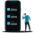

Dalla passione per la psicologia alla UX / UI Designer.
in corso | 2021
Start2impact
Ux / ui designer.
gennaio | 2021
Ninja Academy
Master in digital marketing.
gennaio | 2021
Ninja Academy
Master in digital marketing.
febbraio | 2020 - presente
Esperienza Lavorativa
Social media e content manager.
novembre | 2017 - presente
Esperienza Lavorativa
Web design e graphic design.
novembre | 2017 - presente
Esperienza Lavorativa
Web design e graphic design.
ottobre | 2017
ILAS - Master Accademico
Brand identity design.
ottobre | 2016
ILAS - Diploma Accademico
Web design e graphic design.
giugno | 2013
Diploma Quinquiennale
Tecnico della gestione aziendale.
giugno | 2013
Diploma Quinquiennale
Tecnico della gestione aziendale.
novembre | 1994
Nato a Napoli
Sportivo, appassionato del genere musicale "Pop" e "House", amante della tecnologia e una forte attenzione ai dettagli.
Perché ho scelto di diventare un UX / UI Designer?
Ecco i 2 motivi principali per cui ho scelto di iniziare a progettare nuove interfacce utente.

1. Obiettivo
Ridurre al minimo il carico cognitivo nel processo decisionale.
2. Obiettivo
Migliorare l'usabilità dei dispositivi digitali fornendo una migliore esperienza utente.
La mia esperienza nel settore digitale
Ho raggiunto importanti obiettivi presso:
Hard skills essenziali
Le mie competenze in ambito UX / UI Design.
UX Research
Ricerca sugli utenti, raccolta delle informazioni, interviste, sondaggi e analisi dei dati.
UX Architect
Sviluppo della struttura concettuale, flussi di interazione, organizzazione dei contenuti, forme, dimensioni e spazi.
UX Usability
Sviluppare un interfaccia semplice da usare, efficiente nei processi,
riportare in modo chiaro e visibile le azioni svolte, rendere piacevole e memorabile l'utilizzo.
Interaction design
Costruzione di prototipi interattivi user-centred, analisi delle attività degli utenti in fase di A/B test.
Fondamentale per garantire un ottima esperienza utente.
UX Writer
Creazione di testi facili da comprendere, con l'obiettivo di persuadere e incrementare le interazioni e diminuire il "bounce rate".
Visual Design
Progettazione dell'interfaccia utente (UI). Realizzazione dei contenuti visivi: dimensioni, forme, colori e molto altro.
UX Writer
Creazione di testi facili da comprendere, con l'obiettivo di persuadere e incrementare le interazioni e diminuire il "bounce rate".
Visual Design
Progettazione dell'interfaccia utente (UI). Realizzazione dei contenuti visivi: dimensioni, forme, colori e molto altro.
Progetti recenti
Progettazione di esperienza ed interfaccia utente.